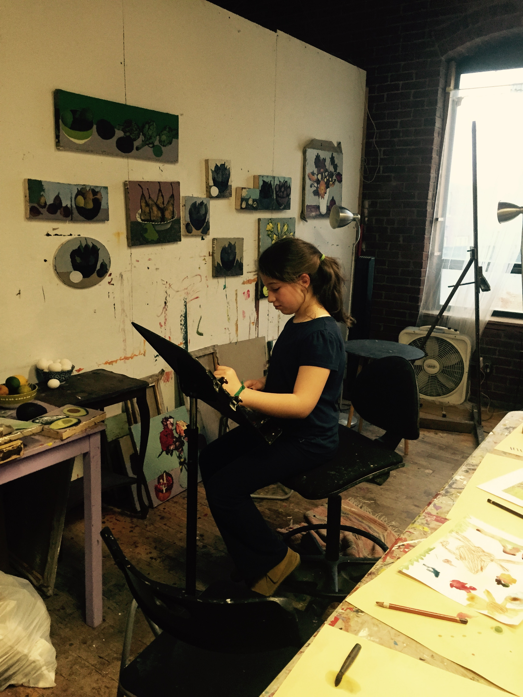
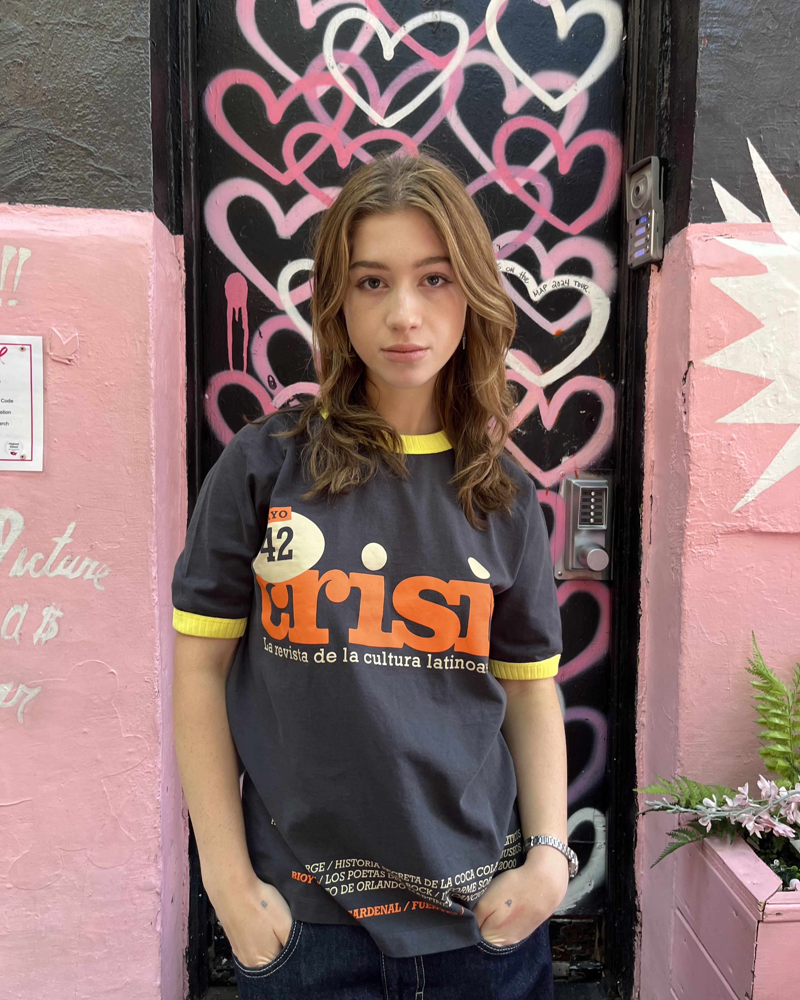

Eliana Lehmann
☆About Me☆


Hi, my name is Ellie. I am a student at the University of Massachusetts, Amherst and am double majoring in Social Design and Informatics. This website application was created to showcase various artworks that I have completed throughout my life. I began my journey at age 4, taking private art lessons every Friday until the age of 16. Since then I have taken multiple art classes at UMass and continue working with different mediums in my spare time as well. I hope you enjoy my portfolio.